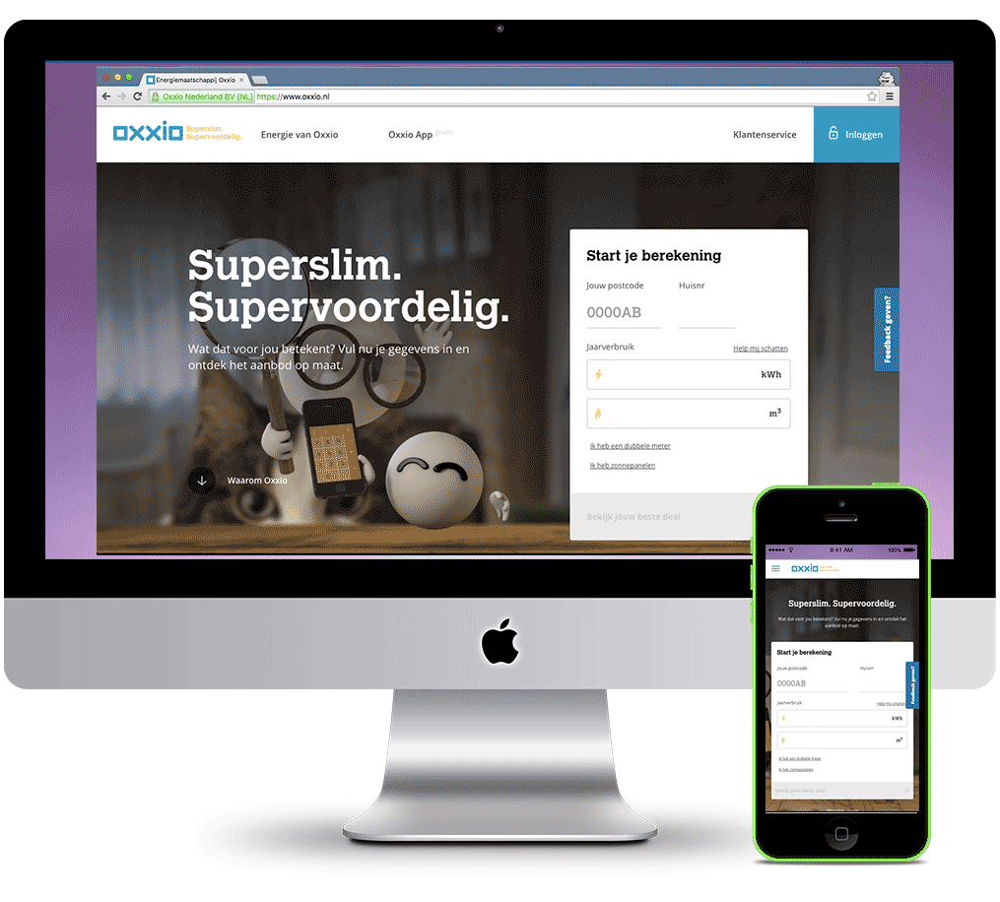
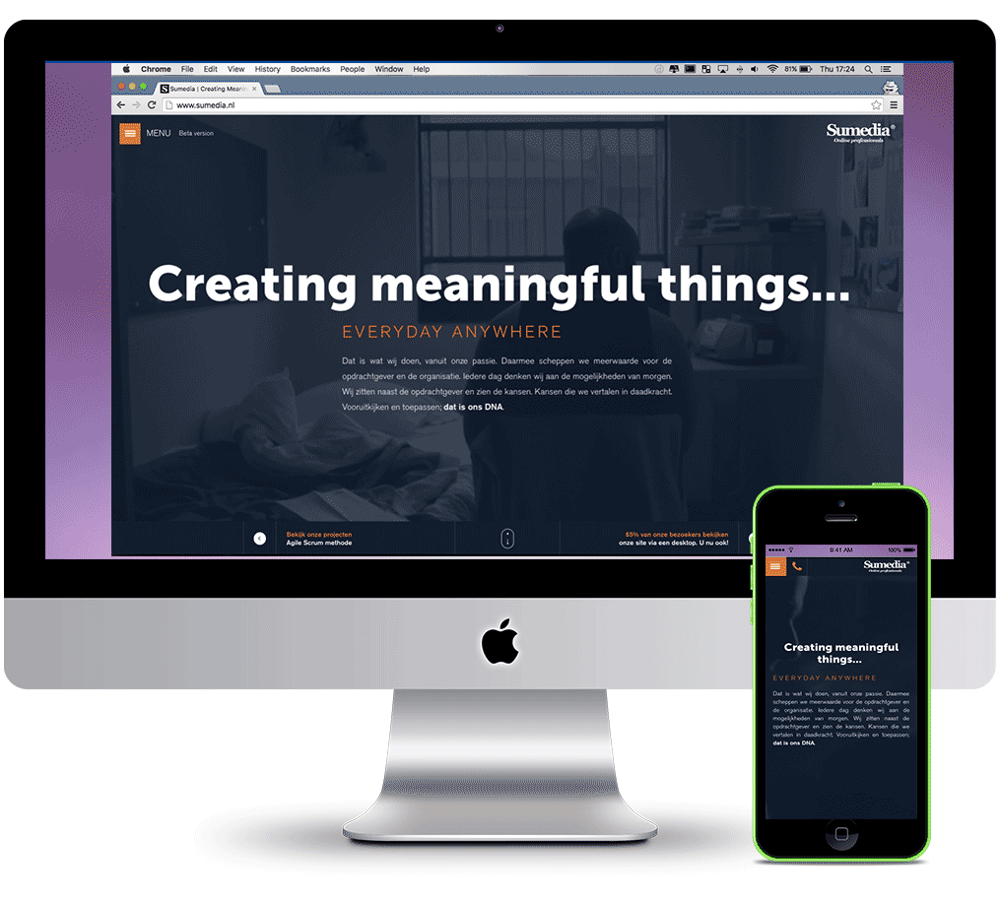
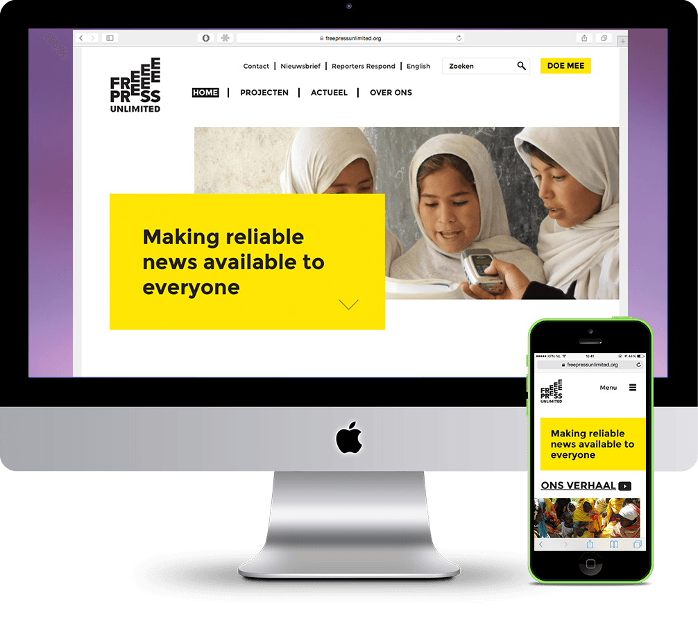
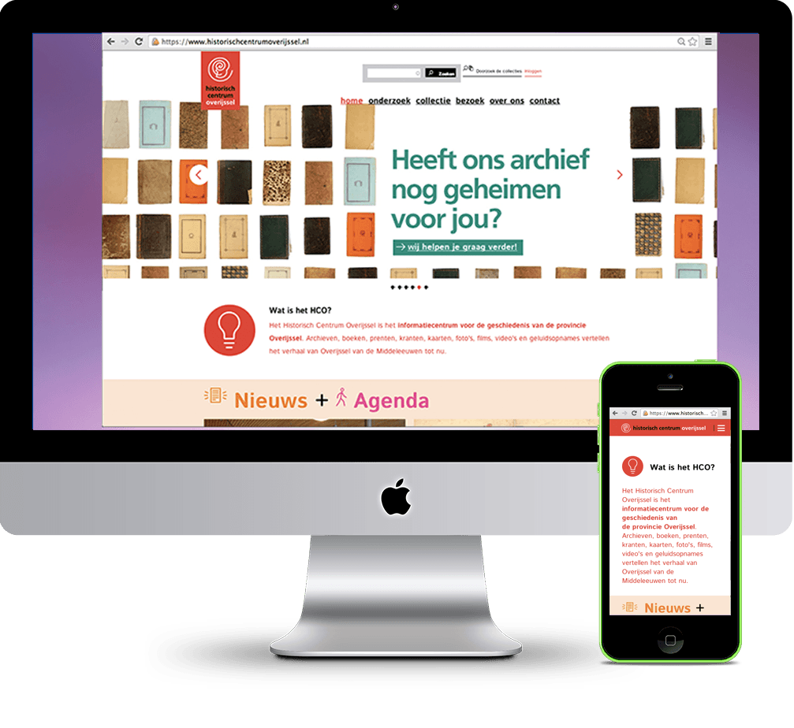
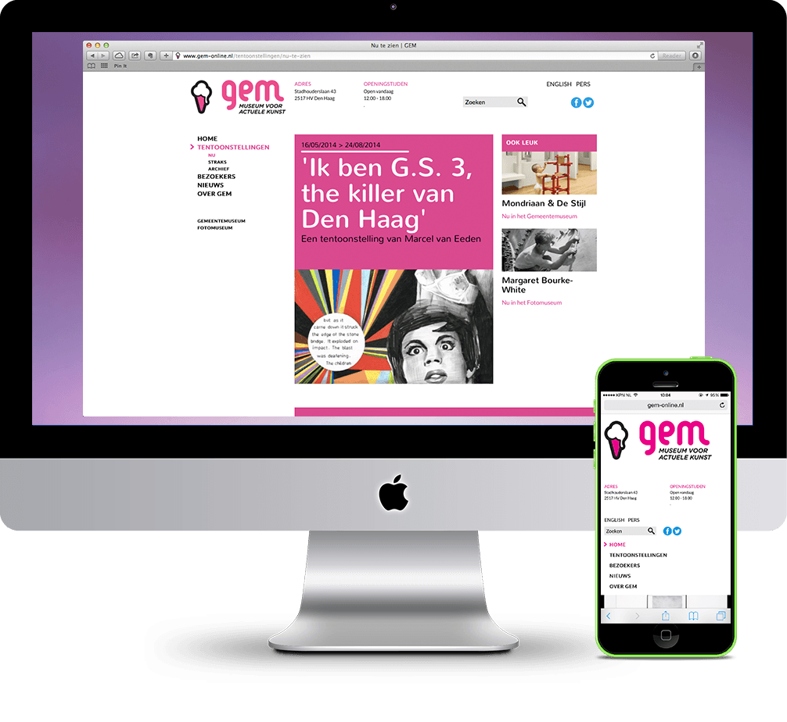
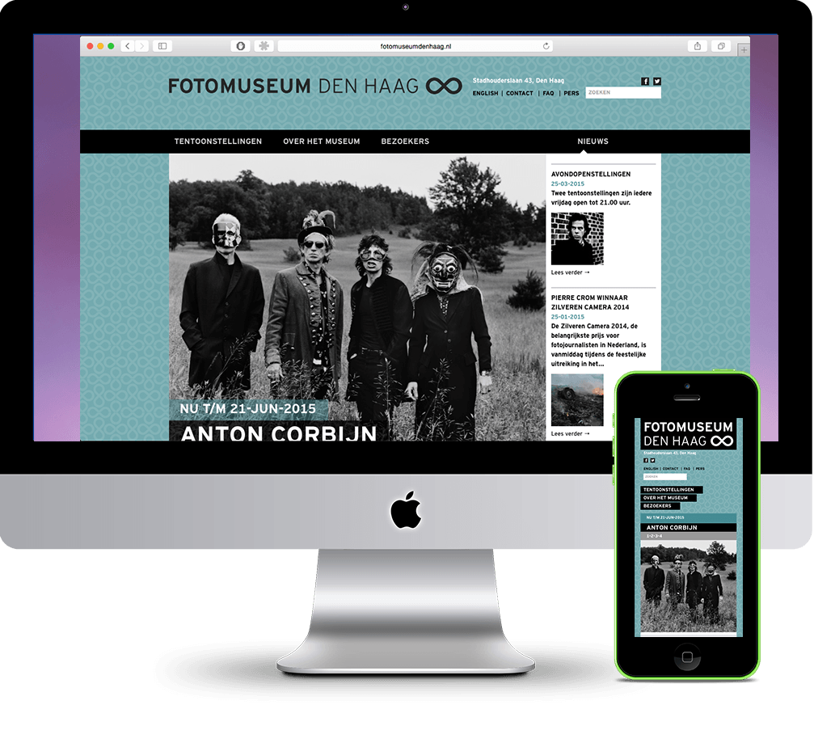

A little about me.
Mah·gah·lie | [Mah-gah-lee]
* also: Maggie- Communicator
- Front-End Developer [view my work];
- Flexible Thinker.
- Resourceful;
- Patient;
- Project Management
- Efficient;
- Working on a css library;
A short bio...
I have been working in the world of the web for more than 5 years. Because of my experience and natural fondness for organisation, I always look for the best way and fastest to get things done.
My biggest passion is working in short projects. I enjoy learning new methods and techniques, like Python or working in Adobe Illustrator.
Relevant skills:
- HTML5/CSS3
- Object Oriented CSS
- Sass
- JavaScript
- PHP
- Git (Command Line, too)
- Gulp
- Adobe Photoshop
- Adobe Illustrator
- Scrum/Agile
- WordPress Theming (not Plugins)
- Drupal Theming (not Modules)
My ideal work setup
Websites go on the internet, usually. So that means I don't need to be at the office every day. I am at my best when I can work when I choose. This shows in the quality in my work.
Examples of my work.
-

Oxxio
-
Made with:
- AngularJS
- Sass+Susy Grid
- Grunt/Gulp
- @TamTam - Amsterdam
-

Sumedia
-
Made with:
- WordPress
- Sass+Susy Grid
- Grunt/Gulp
-

Free Press Unlimited.
-
Made with:
- Drupal 7
- Sass+Susy Grid
- Grunt/Gulp
- @LimoenGroen.nl - Amsterdam
-

Historisch Centrum Overijssel
-
Made with:
- Drupal 7
- Sass+Susy Grid
- Grunt/Gulp
- @LimoenGroen.nl - Amsterdam
-

Gem Online
-
Made with:
- Drupal 7
- Sass+Susy Grid
- Grunt/Gulp
- @LimoenGroen.nl - Amsterdam
-

Fotomuseum Den Haag
-
Made with:
- Drupal 7
- Sass+Susy Grid
- Grunt/Gulp
- @LimoenGroen.nl - Amsterdam